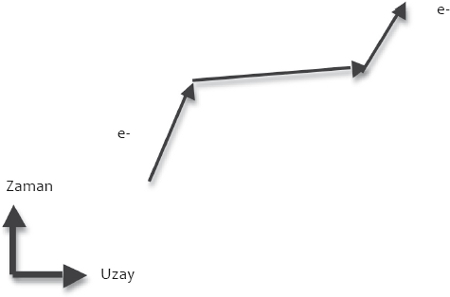
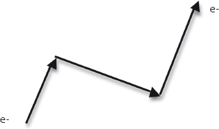
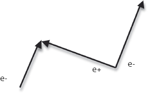
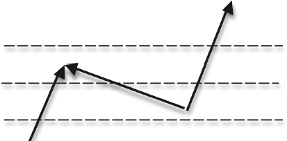
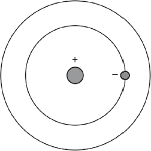
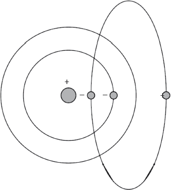
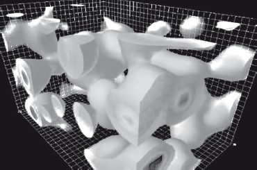

Daha azı daha çoktur.
Anonim
Bir adım ileri, iki adım geri gidiyorduk; ya da evreni kavramaya, kesin bir biçimde tanımlamaya yönelik araştırmalarımız böyle gidiyormuş gibi görünüyordu. Gözlemler sonunda evrenimizin eğimini kesin olarak belirlemiş (bu süreçte uzun zamandır varlığını sürdüren kuramsal kuşkulara değer kazandırmış) olsa da birden, evrende protonlar ve nötronların açıklayabileceğinden 10 kat daha fazla madde olmasına rağmen, düz bir evren için gerekli maddenin yüzde 30'unu oluşturan büyük miktardaki karanlık maddenin evrendeki enerjinin tamamını açıklamaya hiçbir şekilde yetmeyeceği görüldü. Evrenin geometrisinin doğrudan ölçülmesi, ardından evrenin gerçekten de düz olduğunun keşfedilmesi evrendeki enerjinin yüzde 70'inin hâlâ kayıp olduğu, galaksilerin, hatta galaksi topluluklarının içlerinde de çevrelerinde de olmadığı anlamına geliyordu!
İşler burada anlattığım kadar sarsıcı değildi tabii. Evrenin eğimine ilişkin bu ölçümlerden, evrenin içindeki yığınlaşmış toplam kütlenin (ikinci bölümde anlattığım üzere) belirlenmesinden önce bile, evrenimizin o zamana kadar kabul görmüş -uzamsal olarak düz olması için gerekli (aslında bugün var olduğunu bildiğimizin üç katı kadar) karanlık maddeye sahip- tablosunun gözlemlerle uyuşmadığına dair işaretler vardı. Daha 1995 gibi bir tarihte, Chicago Üniversitesi'nden meslektaşım Michael Turner'la birlikte, genel kabul gören bu tablonun doğru olamayacağını, aslında hem düz bir evrenle (o zamanki kuramsal tercihimizle) hem de galaksilerin topluluklar oluşturması ve bu toplulukların iç dinamiklerine ilişkin gözlemlerle uyuşuyormuş gibi görünen tek olasılığın, Albert Einstein'ın 1917'de kuramının tahminleri ile içinde yaşadığımızı düşündüğümüz durağan evren arasındaki belirgin çelişkiyi çözmek için geliştirdiği, o zamandan beri de bir kenara bırakılmış çılgınca bir kuramsal fikri akla getiren, çok daha tuhaf bir evren olduğunu belirten, genel çizgi dışı bir makale kaleme almıştım.
Hatırladığım kadarıyla o zamanki amacımız soruna kesin bir çözüm önermekten çok genel kabul gören kavrayışta bir şeylerin yanlış olduğunu göstermekti. Önerimiz gerçekten inanılamayacak kadar çılgınca görünüyordu, o yüzden de üç yıl sonra çizgi dışı bu önerimizin turnayı gözünden vurduğu anlaşıldığında sanırım kimse bizim kadar şaşırmadı!
1917'ye dönelim. Hatırlarsınız, Einstein Genel Görelilik kuramını geliştirmiş, Merkür'ün yörüngesinde dönerken Güneş'e en yaklaştığı noktanın yıl be yıl ilerlemesini açıklayabileceğini keşfetmesi kalbini heyecanla doldurmuştu. Gerçi bir de, kuramının, içinde yaşadığını düşündüğü durağan evreni açıklayamayacağı gerçeğiyle yüzleşmesi gerekecekti.
Einstein, kendi kanılarına daha fazla güvenseydi, evrenin durağan olamayacağını tahmin edebilirdi. Ama güvenmiyordu. Aksine, kuramında küçük bir değişiklik yapabileceğini fark etmişti; onu en başta genel görelilik kuramını geliştirmeye yönelten matematiksel kuramlarla tamamen uyuşan, durağan bir evreni mümkün kılacakmış gibi görünen bir değişiklikti bu.
Einstein'ın Genel Görelilik Kuramı'nda denklemlerin ayrıntıları karmaşık olsa da yapıları nispeten doğrudandır. Denklemlerin sol tarafında evrenin eğimi, ayrıca madde ve ışınım üzerinde etkili kütleçekim kuvvetlerinin gücü tanımlanır. Bunlar, denklemlerin sağ tarafındaki miktarla belirlenir, bu miktarsa evrendeki her tür enerji ve madde miktarının toplam yoğunluğunu verir.
Einstein, denklemin sol tarafına küçük bir sabit terim eklerse, bu terimin uzak nesneler arasındaki mesafe açılırken gerileyen standart kütleçekim kaynaklı çekimin yanı sıra uzayın tamamında küçük bir sabit itici kuvvet ortaya çıkaracağını fark etmişti. Bu fazladan kuvvet yeterince küçük olursa insan ölçeğinde, hatta Newton'ın Kütleçekim Kanunu'nun gayet güzel işliyor göründüğü bizim güneş sistemimiz ölçeğinde bile belirlenemez boyutlarda olabilirdi. Ama Einstein akıl yürütürken bu kuvvet uzayın her yerinde sabit olacağından galaksimiz ölçeğinde düşünüldüğünde çok uzaktaki nesnelerin çekim güçlerine karşı koyacak kadar büyük olabilir diye düşündü. Bunun da geniş ölçekte düşünüldüğünde evrenin durağan olmasına yol açacağı sonucuna vardı.
Einstein bu fazladan terime, kozmolojik terim demişti. Çünkü denklemlere yapılan sabit bir eklemeden ibaretti, ama bugün bu terime kozmolojik sabit denmesi adettendir.
Einstein evrenin aslında genişlediğini fark ettiğinde bu terimi bir kenara bırakmış, bunu denklemlerine ekleme kararının en büyük hatası olduğunu söylemişti.
Ama bu terimden kurtulmak o kadar da kolay değildir. Diş macununu sıktıktan sonra tüpün içine geri sokmaya benzer. Bunun nedeni de bugün kozmolojik sabiti tümüyle farklı bir tabloda görüyor olmamızdır, öyle ki Einstein denklemlerine bu terimi eklememiş olsaydı, sonraki yıllarda biri mutlaka eklerdi.
Einstein'ın terimini denklemin sol tarafından sağ tarafına geçirmek bir matematikçi için küçük bir adımdır, ama bir fizikçi için muazzam bir sıçramadır. Matematiksel olarak bunu yapmak çocuk oyuncağı olsa da bu terim denklemin sağ tarafına, bütün terimlerin durağan evrenin enerjisine katkıda bulunduğu tarafa geçirildiğinde fiziksel bakış açısıyla tamamen farklı bir şeyi, açık bir deyişle toplam enerjiye yapılan yeni bir katkıyı gösterir. İyi de nasıl bir şey böyle bir terimi ortaya çıkarabilir?
Cevap hiçtir.
Hiç derken, hiçlikten başka hiçbir şeyi kast etmiyorum, yani bu durumda normalde boş uzay dediğimiz hiçlikten. Bu şu demektir: Uzayın bir bölgesini alır, içindeki her şeyi, tozu, gazı, insanları, hatta içinden geçen ışınımı, kısacası bu bölgedeki her şeyi temizlersem, geride kalan boş uzayın bir ağırlığı varsa, bu ağırlık Einstein'ın icat ettiği gibi kozmolojik bir terimin varlığına tekabül eder.
Eh, bu da Einstein'ın kozmolojik sabitinin kulağa daha da çılgınca gelmesine yol açıyor! Çünkü herhangi bir dördüncü sınıf öğrencisi bile enerjinin ne olduğunu bilmemesine rağmen hiçlikte ne kadar enerji olduğunu söyleyebilir. Cevabın hiç olması gerekir.
Ne de olsa dördüncü sınıf öğrencilerinin çoğu kuantum mekaniği görmemiş, göreliliği çalışmamıştır. Çünkü Einstein'ın Özel Görelilik Kuramı'nın sonuçlarını kuantum evreniyle birleştirdiğimizde boş uzay hiç olmadığı kadar tuhaflaşır. Aslına bakarsanız o kadar tuhaftır ki boş uzayın bu yeni davranışını ilk keşfedip inceleyen fizikçiler bile gerçek dünyada gerçekten var olduğuna inanmakta zorlanmışlardır.
Görelilik kuramını Kuantum Mekaniği'yle birleştirmeyi ilk başaran parlak, az ve öz konuşan İngiliz kuramsal fizikçi Paul Dirac olmuştu. Dirac Kuantum Mekaniği'nin bir kuram olarak geliştirilmesinde de öncü rolü oynamıştı.
Kuantum Mekaniği 1912 ile 1927 arasında, en başta ikonlaşmış parlak bir isim olan Danimarkalı fizikçi Niels Bohr ile parlak gençler Avusturyalı fizikçi Erwin Scrödinger ve Alman fizikçi Werner Heisenberg'in çalışmalarıyla geliştirilmişti. İlk olarak Bohr'un ortaya attığı, Schrödinger ve Heisenberg'in matematiksel olarak rafine hale getirdiği kuantum dünyası insan ölçeğindeki nesnelerle yaşadığımız deneyimlere dayalı, sağduyunun gerektirdiği bütün kavrayışlara aykırıdır. Bohr ilk olarak atomlardaki elektronların, tıpkı Güneş'in etrafında dönen gezegenler gibi merkezdeki çekirdeğin etrafında döndüğünü ileri sürmüş, ama atomik tayfta (farklı elementlerin saldığı ışık frekansları) gözlenen kuralların, elektronların ancak sabit bir "kuantum düzeyi"nde kararlı bir yörüngeyle sınırlandırılmaları, çekirdeğe doğru serbestçe sarmallar çizmemeleri halinde anlaşılabileceğini göstermişti. Elektronlar bu düzeyler arasında sabit frekanslarda ya da kuantalarda ışık salarak ya da emerek hareket edebiliyorlardı. Kuantayı da ilk kez Max Planck 1905'te sıcak nesnelerin saldığı ışınım biçimlerini anlamanın bir yolu olarak ileri sürmüştü.
Ne var ki Bohr'un "kuantizasyon kuralları" vakadan vakaya biraz değişiyordu. 1920'lerde Schrödinger ile Heisenberg, elektronların beysbol topları gibi makroskopik nesnelerden farklı dinamik kurallarına uyması halinde, bu "kuantizasyon kuralları"nın ilk ilkelerden türetilebileceğini birbirlerinden bağımsız olarak göstermişlerdi. Elektronlar parçacık gibi davranmanın yanı sıra dalga gibi de davranabiliyorlar, uzaya yayılmış gibi görünüyorlardı. (Schrödinger'in elektronlar için "dalga fonksiyonu" buradan geliyordu.) Elektronların özelliklerine dair ölçüm sonuçlarının da ancak olasılıklara dayalı belirlemeler ortaya çıkarabildiği gösterilmişti, farklı özelliklerin çeşitli kombinasyonları aynı anda kesin olarak ölçülemiyordu. (Heisenberg'in "Belirsizlik İlkesi" de buradan geliyordu.)
Dirac, Heisenberg'in kuantum sistemlerini tanımlamak için önerdiği (kendisine 1932 Nobel Ödülü kazandıran) matematiğin, klasik makroskopik nesnelerin dinamiklerini yöneten iyi bilinen yasalarla titiz bir analoji kurularak türetilebileceğini göstermişti. Ayrıca daha sonra Schrödinger'in matematiksel "dalga mekaniği"nin de bu şekilde türetilebileceğini, biçimsel olarak Heisenberg'in formülasyonuyla eşdeğer olduğunu da göstermeyi başardı. Ama Dirac, Bohr, Heisenberg ve Schrödinger'in Kuantum Mekaniği'nin ne kadar dikkat çekici olursa olsun, kuantum sistemlerinin kuruluşları itibarıyla benzetildiği klasik sistemlere hükmetmesi gereken yasaların Einstein'ın görelilik yasaları değil, Newton yasaları olduğunu, kuantum mekaniğinin ancak bu tür sistemlerde geçerli olduğunu da biliyordu.
Dirac resimlerden ziyade matematik terimleriyle düşünmeyi severdi, dikkatini kuantum mekaniğini Einstein'ın görelilik kuramlarıyla tutarlı hale getirmeye yönelttiğinde de çok farklı tipte denklemlerle oynamaya başladı. Bu denklemler arasında elektronların "spin"leri olduğu, yani küçük topaçlar gibi döndükleri ve açısal hareket ettikleri, herhangi bir eksende hem saat yönünde hem saat yönünün tersine dönebildikleri gerçeğini kapsayan çok bileşenli karmaşık matematiksel sistemler de bulunuyordu.
Dirac 1929'da maden damarını buldu. Schrödinger denklemi ışıktan çok daha yavaş hızlarda hareket eden elektronların davranışlarını gayet güzel ve doğru açıklamıştı. Dirac Schrödinger denklemini matris denilen miktarları kullanarak daha karmaşık bir denklem haline getirirse (bu da aslında denklemin dört farklı denklem çiftini tanımlaması anlamına geliyordu) Kuantum Mekaniği ile Görelilik'i tutarlılıkla birleştirebileceğini, böylece elektronların çok daha hızlı hareket ettiği sistemlerin davranışlarını prensipte betimleyebileceğini anlamıştı.
Gelgelelim bir sorun vardı. Dirac elektrik ve manyetik alanlarla etkileşime giren elektronların davranışlarını betimlemeyi amaçlayan bir denklem yazmıştı. Ama bu denklem elektronlara benzeyen, ama artı elektrik yüklü yeni parçacıkların varlığını gerektiriyormuş gibi görünüyordu.
O sıralarda doğada elektronun tersi elektrik yüküne sahip olduğu bilinen bir tek temel parçacık vardı: Proton. Ama protonlar tümüyle elektronlara benzemiyorlardı. Bir kere elektronlardan 2000 kat daha ağırlardı!
Dirac şaşkına dönmüştü. Nafile bir çabayla, bu yeni parçacıkların aslında proton olduğunu, ama uzayda hareket ederlerken girdikleri etkileşimlerin bir şekilde daha ağırmış gibi davranmalarına yol açtığını savundu. Çok geçmeden Heisenberg de dahil diğer fizikçiler bu varsayımın anlamlı olmadığını gösterdiler.
Doğa çabucak imdada yetişti. Dirac'ın bu denklemi önermesinden iki yıl, çalışması doğruysa yeni bir parçacığın var olması gerektiğini kabul etmesinden bir yıl sonra, Dünya'ya gelen kozmik ışınları inceleyen bilim insanları elektrona benzeyen, ama onun tersi elektrik yüküne sahip yeni parçacıkların izini buldular ve bunlara pozitron adını verdiler.
Dirac aklanmıştı, ama daha sonra denkleminin kendisinden daha akıllı olduğunu söyleyerek önceden kendi kuramına güvensizlik gösterdiğini de kabul etmişti!
Bugün pozitrona elektronun "karşıt parçacığı" diyoruz, çünkü Dirac'ın keşfinin her yerde geçerli olduğu anlaşılmıştır. Elektronun bir karşıt parçacığı olmasını gerektiren fizik, doğadaki her temel parçacık için böyle karşıt bir parçacık olmasını gerektirir. Örneğin protonun karşıt parçacığı karşıt protondur. Nötronlar gibi bazı nötral parçacıkların dahi karşıt parçacıkları vardır. Parçacıklar ve karşıt parçacıklar karşılaştıklarında birbirlerini ortadan kaldırarak saf bir ışınım ortaya çıkarırlar.
Bütün bunlar kulağa bilim-kurgu gibi geliyor (hatta karşıt madde "Uzay Yolu"nda önemli bir rol oynamıştı), ama dünyanın çeşitli yerlerindeki büyük parçacık hızlandırıcılarımızda her an karşıt parçacıklar yaratmaya devam ediyoruz. Karşıt parçacıklar parçacıklarla aynı özelliklere sahip olduğundan, karşıt maddeden oluşan bir dünya, maddeden oluşan bir dünya gibi davranabilir; karşıt sevgililer karşıt arabaların içinde, karşıt mehtapta sevişebilirler. Öyle sanıyoruz ki karşıt maddeden ya da yarı madde yarı karşıt maddeden oluşan bir dünyada değil de maddeden oluşan bir evrende yaşıyor olmamız, daha sonra değineceğimiz biraz fazla sayıda etkenden kaynaklanan, içinde yaşadığımız koşulları ortaya çıkaran bir kazadan ibarettir. Karşıt madde kulağa tuhaf gelse de Belçikalıların tuhaf olmaları anlamında tuhaftır. Aslında tuhaf değillerdir, yalnızca onlara ender rastlanır!
Karşıt parçacıkların varlığı gözlenebilir dünyayı çok daha ilginç bir yer haline getirmiştir, ama öyle anlaşılıyor ki boş uzayı da daha karmaşıklaştırmıştır.
Efsanevi fizikçi Richard Feynman, Görelilik Kuramı'nın neden karşıt parçacıkların varlığını gerektirdiği sorusuna sezgisel bir kavrayış getiren ilk bilim insanı olmuştu. Açıklaması boş uzayın aslında o kadar boş olmadığını da grafik olarak gösteriyordu:
Feynman göreliliğin, farklı hızlarda hareket eden gözlemcilerin mesafe ve zaman gibi nicelikleri farklı olarak ölçeceklerini söylediğini anlamıştı. Örneğin çok hızlı hareket eden nesnelere zaman yavaşlamış gibi gelecektir. Nesneler bir şekilde ışıktan hızlı hareket edebilselerdi, zaman içinde geriye gidiyormuş gibi görünürlerdi, bu da ışık hızının normalde kozmik hız sınırı olarak görülme nedenlerinden biridir.
Gelgelelim Kuantum Mekaniği'nin köşetaşlarından biri Heisenberg Belirsizlik İlkesi'dir, daha önce açıkladığım üzere bu ilke örneğin pozitron ve yönlü hız gibi belli nicelik çiftlerinin, bir sistemdeki kesin değerlerinin aynı anda belirlenemeyeceğini söyler. Başka bir deyişle belli bir sistemi sabit, sonlu bir süre boyunca ölçerseniz toplam enerjisini kesin olarak belirleyemezsiniz.
Bu şu anlama gelir: Kuantum Mekaniği, çok kısa, hızlarını yüksek bir kesinlikle ölçemeyeceğiniz kadar kısa süreler zarfında, bu parçacıkların ışıktan hızlıymışlar gibi hareket etmeleri olasılığına kapı aralar! Ama ışıktan hızlı hareket ediyorlarsa, Einstein'ın söylediği gibi zamanda geri gidiyormuş gibi davranmaları gerekir!
Feynman, kulağa çılgınca gelen bu olasılığı ciddiye alıp ne anlama geldiğini araştıracak kadar cesurdu. Hareket eden, düzenli aralarla, yolculuğunun ortasına geldiğinde ışıktan daha hızlı hale gelen bir elektronu şu şekilde grafiğe dökmüştür:

Feynman, görelilik kuramına göre başka bir gözlemcinin, aşağıdaki gibi görünen bir ölçüm yapabileceğini anlamıştı: Bir elektron zaman içinde ilerliyor, sonra geriliyor, sonra yine ilerliyor.
Gelgelelim zaman içinde geriye giden eksi bir elektrik yükü, zaman içinde ileri giden bir elektrik yüküyle matematiksel olarak eşdeğerdir! Dolayısıyla görelilik elektronlarla aynı kütleye ve aynı özelliklere sahip artı yüklü parçacıkların varlığını gerektiriyordu.

Bu örnekte Feynman'ın ikinci çizimi şu şekilde yorumlanabilir: Tek bir elektron hareket ediyor, sonra uzayda bir noktada hiç yoktan bir pozitron-elektron çifti ortaya çıkıyor, sonra pozitron ilk elektronla karşılaşıyor ve ikisi birden ortadan kalkıyorlar. Sonrasında geriye yine hareket eden tek bir elektron kalıyor:

Bu sizi rahatsız etmediyse bir de şunu bir düşünün: Tek bir parçacıkla başlamış tek bir parçacıkla bitirmiş olsanız da kısa bir süre boyunca hareket eden üç parçacık vardı:

Aradaki o kısacık süre zarfında, çok kısa bir süreliğine hiç yoktan bir şey ortaya çıktı! Feynman görünürdeki bu paradoksu 1949'da kaleme aldığı "Bir Pozitron Kuramı"nda, savaş yıllarıyla kurduğu nefis bir benzetmeyle çok hoş betimler:
"Alçaktan uçan, bombalanacak yere doğru uzanan tek bir yol gören bombardıman pilotu gibi sanki; pilot birden üç yol görür ve ancak yolların ikisi birleşip tekrar ortadan kaybolduğunda tek bir yol üzerindeki uzun bir çatallanmadan geçtiğini anlar."
Bu "çatallanma" süresi bütün parçacıkları doğrudan ölçemeyeceğimiz kadar kısadır, kuantum mekaniği ve görelilik bu tuhaf durumun yalnız mümkün görülmediği, aynı zamanda gerekli olduğu anlamına gelir. Ölçülemeyecek kadar kısa sürelerde belirip kaybolan parçacıklara sanal parçacıklar denir.
Boş uzayda ölçemeyeceğiniz yeni bir parçacık kümesi icat etmek bir topluiğne başında çok sayıda meleğin oturduğunu ileri sürmeye benziyor. Bu parçacıkların ölçülebilir bir etkilerinin olmaması da bu fikri bir o kadar güçsüz kılacaktır. Ne var ki doğrudan gözlenebilir olmasa da bu parçacıkların dolaylı etkilerinin, bugün deneyimlediğimiz evrenin çoğu özelliğini ortaya çıkardığı anlaşılmaktadır. Yalnızca bu da değil, bu parçacıkların etkisi, bilim alanındaki herhangi bir hesaplamadan daha kesin olarak hesaplanabilir.
Örneğin bir hidrojen atomunu, Bohr'un kuantum kuramını deneyip açıklamak için geliştirdiği, Schrödinger'in betimleyici meşhur denklemini dayandırdığı sistemi bir düşünün. Kuantum mekaniğinin güzelliği, hidrojenin ısıtıldığında saldığı belli renklerdeki ışığı, protonun etrafında dönen elektronların ancak belli enerji düzeylerinde var olabildiklerini, bir düzeyden diğer düzeye sıçradıklarında yalnızca sabit frekanslarda ışık emdiklerini ya da saldıklarını savunarak açıklayabilmesinde yatar. Schrödinger denklemi öngörülen bu frekansların hesaplanmasını mümkün kılar ve cevabı da neredeyse kesinlikle doğru bulur.
(Ama tamamen kesin değil.)
Hidrojen tayfı daha titiz gözlendiğinde, önceden tahmin edilenden çok daha karmaşık olduğu, gözlenen enerji düzeyleri arasında başka küçük ayrılmalar olduğu anlaşıldı, bunlara tayfın "ince yapısı" dendi. Bu ayrılmalar Bohr'un zamanından beri biliniyor, görelilik etkilerinin bununla ilgili olduğundan kuşkulanılıyor olsa da tam anlamıyla görelilikçi bir kuram ortada yokken bu kuşkular doğrulanamıyordu. Ne mutlu ki Dirac'ın denklemi, bu öngörüleri, Schrödinger denklemine nazaran daha da iyileştirmeyi ve ince yapı da dahil olmak üzere gözlemlerin genel yapısını yeniden üretmeyi başardı.
Buraya kadar iyi. Ama Nisan 1947'de Amerikalı bilim insanı Willis Lamb ile öğrencisi Richard Retherford inanılmaz derecede kötü niyetliymiş gibi görünebilecek bir deney yaptılar. Lamb ve Retherford hidrojen atomlarının enerji düzeylerinin yapısını, bir milyonda bir hata payıyla ölçebilecek bir teknolojik yeterliliğe sahip olduklarını fark ettiler.
Dertleri neydi ki? Eh, deneyler yapan bilim insanları, bir şeyi önceden mümkün olmayan bir kesinlikle ölçmenin yeni bir yöntemini bulduklarında, bu onların ilerlemesi için yeterli motivasyonu sağlar. Bu süreçte genellikle yepyeni dünyaların kapıları açılır, tıpkı 1676'da Hollandalı bilim insanı Antonie Philips van Leeuwenhoek'in görünürde boş olan bir su damlasına mikroskopla ilk kez bakıp hayatla dolu olduğunu keşfettiğinde olduğu gibi. Gelgelelim bizim verdiğimiz örnekte deneyci bilim insanlarını harekete geçiren daha acil bir şey vardı. Lamb'in deneyine kadar, eldeki deneylerin sunduğu kesinlik Dirac'ın tahminini ayrıntılı olarak sınayabilecek durumda değildi.
Dirac'ın denklemi, yeni gözlemlerin genel yapısını yeniden üretmişti, ama asıl mesele, Lamb'in gözlemlerin genel yapıyı ayrıntılı olarak üretip üretmediğini bilmek istemesiydi. Kuramı gerçekten sınamanın tek yolu buldu. Lamb kuramı sınadığında kuram aygıtının duyarlılığının çok üzerinde, bir milyarda 100 düzeyinde yanlış yanıt vermiş gibi görünüyordu.
Deneyle kuram arasındaki bu kadar küçük bir uyuşmazlık çok fazlaymış gibi görünmeyebilir, ama Dirac'ın kuramının en basit bir yorumu bile, tıpkı deneyin kendisi gibi muğlaklıktan uzaktı ve kuramla deney ayrılıyordu.
Sonraki birkaç yıl içinde fizik alanındaki en iyi kuramsal zihinler bu konuya daldılar ve kuram ile deney arasındaki uyumsuzluğu çözmeye çalıştılar. Epeyce çalışıldıktan sonra yanıta ulaşıldı, toz duman yatıştığında da Dirac denkleminin aslında kesinlikle doğru yanıtı verdiği, ama sanal parçacıkların etkisinin dikkate alınması halinde bu kesinliğe ulaştığı fark edildi. Resimlere dökecek olursak bu şu şekilde anlaşılabilir. Hidrojen atomları kimya kitaplarında genellikle aşağıdaki gibi resmedilir; ortada bir proton ve onun çevresinde dönen, farklı düzeyler arasında sıçramalar yapan bir elektron.

Ne var ki elektron-pozitron çiftlerinin hiç yoktan kendiliğinden belirivermelerini, çok kısa süre sonra birbirlerini ortadan kaldırmalarını mümkün görürsek bu kısa süre zarfında hidrojen atomu aslında şöyle görünür:

Şeklin altına böyle bir çift çizdim, bu çift daha sonra şeklin üst kısmında birbirlerini ortadan kaldırıyorlardı. Eksi yüklü sanal elektron protonun yakınlarında dolanmayı sever, pozitronsa protondan uzak kalmayı tercih eder. Her neyse, bu tabloda açıkça görüldüğü üzere bir hidrojen atomunda gerçek yük dağılımı, herhangi bir anda, tek bir elektron ve protonla tanımlandığı gibi değildir.
Dikkat çekidir, biz fizikçiler (Feynman ve diğerlerinin yaptığı onca çalışmadan sonra) Dirac'ın denklemini, hidrojen atomunun yakınlarında kesintisiz olarak bulunabilecek bütün sanal parçacıkların hidrojen tayfı üzerindeki etkisini yüksek bir kesinlikle hesaplamak için kullanabileceğimizi öğrenmiş bulunuyoruz. Bu hesaplamayı yaptığımızda da bilimin bütün alanlarındaki en iyi, en doğru tahmine ulaşmış oluyoruz. Diğer bütün bilimsel tahminler bu hesaplamanın sunduğu tahmine kıyasla sönük kalır. Astronomi alanında Kozmik Mikrodalga Geri Plan Işınımı'na ilişkin son gözlemler, kuramsal tahminleri gayet dikkat çekici olan 100.000'de bir düzeyinde kıyaslamamızı sağlıyor. Ne var ki Dirac denklemini ve sanal parçacıkların tahmin edilen varlığını kullanarak atomik parametrelerin değerini hesaplayabiliyor, bu değerleri gözlemlerle karşılaştırabiliyor, bu karşılaştırmada bir milyarda bir düzeyinde ya da daha iyi bir düzeyde dikkat çekici bir uyuşma görebiliyoruz!
Bu yüzden de sanal parçacıklar vardır.
Atom fiziğinde ulaşılmış nefes kesici kesinliğin bir benzerini bulmak zor olsa da sanal parçacıkların kilit bir rol oynadığı, aslında bu kitabın esas meselesiyle daha yakından ilgili bir başka alan daha vardır. Öyle anlaşılıyor ki sanal parçacıklar kütlenizin büyük bölümünü, evrende görünebilir olan her şeyin kütlesinin büyük bir bölümünü açıklamaktadır.
Maddeyi kavrayışımızda gerçekleşen, 1970'lerdeki büyük başarılardan birinin ardında, sizi ve gördüğünüz her şeyi oluşturan madde yığınını yapan protonlar ve nötronların yapı taşı olan parçacıklar, yani kuarklar arasındaki etkileşimleri doğru olarak betimleyen bir kuramın keşfedilmesi vardı. Bu kuramla ilişkili matematik karmaşıktır, bu matematikle uğraşabilecek, özellikle de kuarklar arasındaki güçlü etkileşimin değerlendirilebilir hale geldiği bir düzende bu matematiği ele alabilecek tekniklerin geliştirilmesi 30-40 yılı almıştır. Paralel işlemler yapan en karmaşık bazı bilgisayarların geliştirilmesi de dahil herkülvari bir çabaya girişilmişti; bu karmaşık bilgisayarlarda gerçekte ölçebildiğimiz parçacıkların, yani protonların ve nötronların temel özelliklerini hesaplamak için on binlerce işlemci aynı anda kullanılıyordu.
Bütün bu çalışmalardan sonra, artık elimizde bir protonun içinin aslında neye benzediğini gösteren iyi bir tablo bulunuyor. Bir protonun içinde üç kuark olabilir, ama onların dışında başka birçok şey de vardır. Özellikle vurgulanması gereken bir nokta şudur: Parçacıkları ve kuarklar arasındaki güçlü kuvveti aktaran alanları yansıtan sanal parçacıklar her an varlık bulmakta ve ortadan kaybolmaktadır. İşte size, işlerin aslında neye benzediğini gösteren bir fotoğraf. Gerçek bir fotoğraf değil tabii, kuarkların ve onları bağlayan alanların dinamiklerini yöneten matematiğin sanatsal bir dile dökülmesi daha çok. Tuhaf şekiller ve farklı gölgeler protonun içinde, sanal parçacıklar kendiliğinden varlık bulup ortadan kaybolurken birbirleriyle ve kuarklarla etkileşim kuran alanların gücünü yansıtıyor.

Proton kesintisiz olarak bu sanal parçacıklarla doludur, aslında sanal parçacıkların protonun kütlesine ne kadar katkıda bulunabileceğini tahmin etmeye çalıştığımızda, kuarkların toplam kütlenin çok küçük bir parçasını oluşturduklarını, protonun atıl enerjisine, dolayısıyla atıl kütlesine çevrilen enerjinin büyük bölümüne sanal parçacıkların yarattığı alanların katkıda bulunduğunu görürüz. Aynı şey nötron için de geçerlidir, siz de protonlar ve nötronlardan oluştuğunuz için sizin için de geçerlidir!
Şimdi, sanal parçacıkların atomların içindeki ve çevresindeki boş uzay üzerindeki etkilerini hesaplayabiliyorsak, sanal parçacıkların protonların içindeki boş uzay üzerindeki etkilerini hesaplayabiliyorsak sanal parçacıkların gerçekten boş uzay üzerindeki etkilerini hesaplayabiliyor olmamız gerekmez mi?
Evet, ama bu hesaplamayı yapmak aslında daha zordur. Çünkü sanal parçacıkların atomlar ya da proton kütlesi üzerindeki etkilerini hesapladığımızda, aslında atom ya da protonun sanal parçacıklar da dahil olmak üzere toplam enerjisini hesaplıyoruz; sonra sanal parçacıkların atom ya da proton bulunmaksızın (yani boş uzayda) katkıda bulunabileceği toplam enerjiyi hesaplıyoruz, ondan sonra da atom ya da proton üzerindeki net etkiyi bulabilmek için iki rakamı birbirinden çıkarıyoruz. Böyle yapıyoruz, çünkü öyle anlaşılıyor ki uygun denklemleri çözmeye kalktığımızda bu iki enerjinin her biri biçimsel olarak sonsuzdur, ama iki niceliği birbirinden çıkardığımızda sonlu bir farka, dahası ölçülen değerle kesin bir uyum gösteren bir farka ulaşırız!
Gelgelelim sanal parçacıkların yalnızca boş uzay üzerindeki etkilerini hesaplamak istersek kendisinden çıkaracağımız bir değer olmaz, o yüzden de ulaşacağımız değer sonsuz olur.
Ne var ki sonsuzluk, en azından fizikçileri ilgilendirdiği kadarıyla hoşlanılası bir nicelik değildir, sonsuzluktan olabildiğince kaçınmaya çalışırız. Açıktır ki boş uzayın enerjisi (ya da bu yüzden herhangi bir şeyin enerjisi) fiziksel olarak sonsuz olamaz, bu yüzden de hesaplamayı yapmanın, sonlu bir cevaba ulaşmanın bir yolunu bulmamız gerekir.
Sonsuzluğun kaynağını tanımlamak kolaydır. Belirebilecek bütün olası sanal parçacıkları düşündüğümüzde, Heisenberg Belirsizlik İlkesi (bir sistemde ölçülen enerjideki belirsizlik, sistemi gözleme sürenizle ters orantılıdır diyordu bu ilke) çok daha fazla enerji taşıyan parçacıkların, çok çok daha kısa sürelerde ortadan kaybolmak kaydıyla kendiliğinden hiç yoktan belirebilecekleri anlamına gelir. Prensipte, parçacıklar yok denecek kadar kısa sürelerde ortadan kayboldukları sürece neredeyse sonsuz miktarda enerji taşıyabilirler.
Ne var ki anladığımız biçimiyle fizik yasaları ancak, kütleçekimi (ve uzay-zaman üzerindeki etkilerini) anlarken kuantum mekaniğinin etkilerinin dikkate alınması gereken ölçeğe denk gelen kesin bir değerden büyük mesafeler ve süreler için geçerlidir. Elimizde yaygın adıyla bir "kuantum kütleçekim" kuramı bulunmadığı sürece, bu sınırların ötesine geçen çıkarımlara güvenemeyiz.
Dolayısıyla kuantum kütleçekimiyle ilişkili yeni fiziğin bir şekilde, yaygın deyişle "Planck-zamanı"ndan daha kısa süre boyunca yaşayan sanal parçacıkların etkilerini bir şekilde kesintiye uğratmasını umabiliriz. Bu durumda, yalnızca bu geçici kesintinin mümkün kıldığına eşit ya da ondan daha düşük enerjilerdeki sanal parçacıkların toplam etkisini değerlendirdiğimizde sanal parçacıkların hiçliğe katkıda bulunduğu enerji için sonlu bir tahmine ulaşırız.
Ama bir sorun var. Bu tahmin, karanlık madde de dahil olmak üzere evrende bilinen maddenin tamamıyla ilişkili enerjiden yaklaşık olarak 1000000000000000000000000000000000000000000000000000000000000000000000000000000000000000000000000000000000000000000000000 kat daha büyüktür!
Sanal parçacıklar da dahil olmak üzere atomik enerji düzeyi aralıklarının hesaplanması fizik alanındaki en iyi hesaplamaysa, bu enerji aralığı tahmini (evrendeki başka her şeyin enerjisinden 120 büyüklük kertesi daha büyüktür) kuşkusuz en kötü hesaplamadır! Boş uzayın enerjisi bu büyüklüğe bir nebze olsun yakın olsa, bunun ortaya çıkardığı itici kuvvet (boş uzayın enerjisinin bir kozmolojik sabite tekabül ettiğini hatırlayalım) bırakın bugün Dünya'yı havaya uçuracak kadar büyük olmayı, evrenin ilk zamanlarında o kadar büyük olurdu ki Büyük Patlama'nın bir saniyesinin bir parçası bile geçmeden bugün evrenimizde gördüğümüz her şeyi hızla birbirinden uzaklaştırmış olurdu, öyle ki hiçbir yapı, hiçbir yıldız, hiçbir gezegen, hiçbir insan oluşmamış olurdu.
Yerinde bir tabirle Kozmolojik Sabit Problemi denilen bu problem, benim lisans üstü öğrenim gördüğüm yılların epey öncesinden beri vardır, ilk kez Rus kozmolog Yakov Zel'dovich tarafından 1967'de ortaya konmuştur. Henüz çözülememiştir, bugün fizikte çözülmemiş olan en temel önemdeki problemdir herhalde.
40 yılı aşkın bir süre boyunca bu problemi nasıl çözeceğimize dair hiçbir fikrimiz olmasa da biz kuramsal fizikçiler cevabın ne olması gerektiğini biliyorduk. Demiştim ya, tıpkı boş uzayın enerjisinin sıfır olması gerektiğini tahmin edebilecek dört yaşında bir çocuk gibi bizler de biliyorduk, nihai bir kuram türetildiğinde, bu kuram sanal parçacıkların etkilerinin nasıl silineceğini açıklayacaktı. Boş uzayda nasıl kesinlikle sıfır enerji kalacağını açıklayacaktı. Ya da hiçbir şey. Daha doğrusu Hiç.
Bizim akıl yürütmemiz daha iyiydi, yani öyle sanıyorduk. Boş uzayın enerjisinin büyüklüğünü, şu naif tahminin ileri sürdüğü gerçekten devasa değerden, gözlemlerin mümkün gördüğü üst sınırla tutarlı bir değere çekmemiz gerekiyordu. Bu yüzden de öyle bir şeye ihtiyacımız vardı ki çok büyük bir pozitif sayıdan çok büyük bir negatif sayıyı çıkardığımızda 120 basamakta iki sayı birbirini tümüyle silmeli, 121. basamakta ise fark sıfır olmayan bir sayı çıkmalıydı! Ama bilimde iki büyük sayıyı böyle büyük bir kesinlikle, küçücük bir farkla birbirinden çıkarmanın bir örneği daha yoktu.
Gelgelelim sıfır yaratması kolay bir rakamdır. Doğadaki simetriler genellikle, bir hesaplamanın farklı kısımlarından gelen, birbirlerini kesin olarak geride hiçbir şey bırakmaksızın silen, kesin olarak eşit ve ters katkılar bulunduğunu göstermemizi mümkün kılar.
Dolayısıyla biz kuramcılar geceleri rahatça yatıp uyuyabiliyorduk. Oraya nasıl ulaşacağımızı bilmiyorduk, ama nihai cevabın ne olması gerektiğinden emindik.
Doğanınsa başka planları vardı.